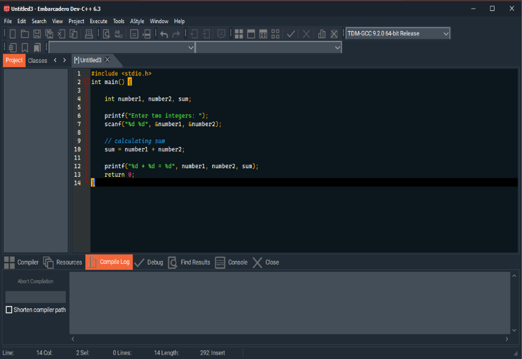
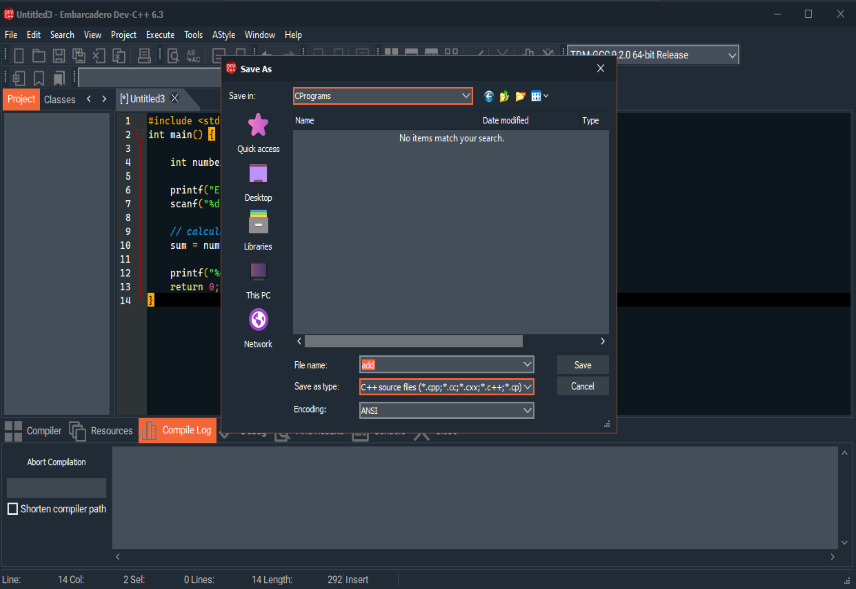

Basics Of C...
Let Us Learn Some Basics First-
Defination:
C is a general-purpose, procedural computer programming language supporting structured programming, lexical variable scope, and recursion, with a static type system.
Installation:
1. Download C executable file by clicking HERE or visiting their official website bloodshed
2. Open the downloaded exe file

3. Click On Next Button

4. Wait Until Successful Installation.
Running:
1. Search for Dev C++ software
2. Open Dev C++

3. Click on File --> New --> Source File or directly press ctrl+N or New Document Tab

4. Write Any C Code That You Want To Execute

5. Press F11 key or Execute --> Compile & Run A New Window Will Appear If File Not Saved Previosly Save The File

7. A new window will appear. Give the required input and check the output.
Basic Arithmatic Operations
Arithmetic Operations Like Addition Subtraction Multiplication and Division-
Addition:
#include <stdio.h> int main() { int num1, num2, sum; printf("Enter two integers: "); scanf("%d %d", &num1, &num2); sum = num1 + num2; printf("%d + %d = %d", num1, num2, sum); return 0; }
Subtraction:#include <stdio.h> int main() { int num1, num2, difference; printf("Enter two integers: "); scanf("%d %d", &num1, &num2); difference = num1 - num2; printf("%d - %d = %d", num1, num2, difference); return 0; }
Multiplication:#include <stdio.h> int main() { int num1, num2, multiplication; printf("Enter two integers: "); scanf("%d %d", &num1, &num2); multiplication = num1 * num2; printf("%d * %d = %d", num1, num2, multiplication); return 0; }
Division:#include <stdio.h> int main() { int num1, num2, division; printf("Enter two integers: "); scanf("%d %d", &num1, &num2); division = num1 / num2; printf("%d / %d = %d", num1, num2, division); return 0; }
Squre Root
C Code To Find Square Root Of A Number-
#include <math.h> #include <stdio.h> int main() { double num, squareroot; printf("Enter a number: "); scanf("%lf", &num); squareroot = sqrt(num); printf("Square root of %.2lf = %.2lf", num, squareroot); return 0; }
Positive, Negative or Zero
C Code To Find If The Number Entered Is Positive, Negative or Zero-
#include <stdio.h> int main() { double num; printf("Enter a number: "); scanf("%lf", &num); if (num <= 0.0) { if (num == 0.0) printf("You entered 0"); else printf("You entered a negative number"); } else printf("You entered a positive number"); return 0; }
Armstrong Number
To Check The Input Number Is Armstrong Or Not-
#include <math.h> #include <stdio.h> int main() { int num, temp, remainder, n = 0; float result = 0.0; printf("Enter an integer: "); scanf("%d", &num); temp = num; for (temp = num; temp != 0; ++n) { temp /= 10; } for (temp = num; temp != 0; temp /= 10) { remainder = temp % 10; result += pow(remainder, n); } if ((int)result == num) printf("%d is an Armstrong number.", num); else printf("%d is not an Armstrong number.", num); return 0; }
Odd Or Even
To Check The Given Number Is Odd Or Even-
#include <stdio.h> int main() { int num; printf("Enter an integer: "); scanf("%d", &num); if(num % 2 == 0) printf("%d is even.", num); else printf("%d is odd.", num); return 0; }
Leap Year
To Check Leap Year Or Not-
#include <stdio.h> int main() { int year; printf("Enter a year: "); scanf("%d", &year); if (year % 400 == 0) { printf("%d is a leap year.", year); } else if (year % 100 == 0) { printf("%d is not a leap year.", year); } else if (year % 4 == 0) { printf("%d is a leap year.", year); } else { printf("%d is not a leap year.", year); } return 0; }
Power
To Find Power By Giving Number And Exponent Value-
#include <stdio.h> int main() { int base, exp; long double result = 1.0; printf("Enter a base number: "); scanf("%d", &base); printf("Enter an exponent: "); scanf("%d", &exp); while (exp != 0) { result *= base; --exp; } printf("Answer = %.0Lf", result); return 0; }
Fibonacci
Display Fibonacci For A Given Range-
#include <stdio.h> int main() { int i, n; int t1 = 0, t2 = 1; int nextTerm = t1 + t2; printf("Enter the number of terms: "); scanf("%d", &n); printf("Fibonacci Series: %d, %d, ", t1, t2); for (i = 3; i <= n; ++i) { printf("%d, ", nextTerm); t1 = t2; t2 = nextTerm; nextTerm = t1 + t2; } return 0; }
LCM
To Find Least Common Multiple Of TWO Numbers-
#include <stdio.h> int main() { int n1, n2, max; printf("Enter two positive integers: "); scanf("%d %d", &n1, &n2); max = (n1 > n2) ? n1 : n2; while (1) { if (max % n1 == 0 && max % n2 == 0) { printf("The LCM of %d and %d is %d.", n1, n2, max); break; } ++max; } return 0; }
HCF
To Find Highest Common Factor Of TWO Numbers-
#include <stdio.h> int main() { int i, num1, num2, min, hcf=1; printf("Enter any two numbers to find HCF: "); scanf("%d%d", &num1, &num2); min = (num1<num2) ? num1 : num2; for(i=1; i<=min; i++) { if(num1%i==0 && num2%i==0) { hcf = i; } } printf("HCF of %d and %d = %d\n", num1, num2, hcf); return 0; }
Factorial
To Find Factorial Of A Given Positive Integer-
#include<stdio.h> int main() { int i,fact=1,num; printf("Enter a num: "); scanf("%d",&num); for(i=1;i<=num;i++){ fact=fact*i; } printf("Factorial of %d is: %d",num,fact); return 0; }
Palindrome
To Check The Given Number Is Palindrome Or Not-
#include <stdio.h> int main() { int n, reversed = 0, remainder, original; printf("Enter an integer: "); scanf("%d", &n); original = n; while (n != 0) { remainder = n % 10; reversed = reversed * 10 + remainder; n /= 10; } if (original == reversed) printf("%d is a palindrome.", original); else printf("%d is not a palindrome.", original); return 0; }
Prime Number
To Find The Prime Number-
#include <stdio.h> int main() { int n, i, flag = 0; printf("Enter a positive integer: "); scanf("%d", &n); if (n == 0 || n == 1) flag = 1; for (i = 2; i <= n / 2; ++i) { if (n % i == 0) { flag = 1; break; } } if (flag == 0) printf("%d is a prime number.", n); else printf("%d is not a prime number.", n); return 0; }
Swap Two Numbers
Two Given Numbers Are Swapped-
#include <stdio.h> int main() { int a, b; printf("Enter Value of a "); scanf("%d", &a); printf("\nEnter Value of b "); scanf("%d", &b); int temp = a; a = b; b = temp; printf("\nAfter Swapping: a = %d, b = %d", a, b); return 0; }
Reverse A String
Reverse Any String May Be Digits, Letters-
#include <stdio.h> #include <string.h> int main() { char str[100]; printf (" \n Enter a string to be reversed: "); scanf ("%s", str); printf (" \n After the reverse of a string: %s ", strrev(str)); return 0; }
Vowel Or Consonent
To Check The Letter Is Vowel Or A Consonent-
#include <ctype.h> #include <stdio.h> int main() { char s; int lowercase_vowel, uppercase_vowel; printf("Enter an alphabet: "); scanf("%c", &s); lowercase_vowel = (s == 'a' || s == 'e' || s == 'i' || s == 'o' || s == 'u'); uppercase_vowel = (s == 'A' || s == 'E' || s == 'I' || s == 'O' || s == 'U'); if (!isalpha(s)) printf("Not an alphabetic character."); else if (lowercase_vowel || uppercase_vowel) printf("%c is a vowel.", s); else printf("%s is a consonant.", s); return 0; }
Sum Of Natural Numbers
To Find The Sum Of Natural Numbers Upto The User Input-
#include <stdio.h> int main() { int n, i, sum = 0; printf("Enter a positive integer: "); scanf("%d", &n); for (i = 1; i <= n; ++i) { sum += i; } printf("Sum = %d", sum); return 0; }
To Check Lowercase Or Uppercase
Finds Out The Charecter Entered Is Lowercase Or Uppercase-
#include <stdio.h> int main() { char ch; printf("Enter any character: "); scanf("%c", &ch); if(ch >= 'A' && ch <= 'Z') { printf("'%c' is uppercase alphabet.", ch); } else if(ch >= 'a' && ch <= 'z') { printf("'%c' is lowercase alphabet.", ch); } else { printf("'%c' is not an alphabet.", ch); } return 0; }
Print Natural Numbers
Print Natural Numbre Upto A Given Number-
#include <stdio.h> int main() { int i, n; printf("Enter any number: "); scanf("%d", &n); printf("Natural numbers from 1 to %d : \n", n); for(i=1; i<=n; i++) { printf("%d\n", i); } return 0; }
Bubble Sort
Sort The Numbers In Accessing Order-
#include <stdio.h> int main(){ int arr[50], num, x, y, temp; printf("Please Enter the Number of Elements you want in the array: "); scanf("%d", &num); printf("Please Enter the Value of Elements: "); for(x = 0; x < num; x++) scanf("%d", &arr[x]); for(x = 0; x < num - 1; x++){ for(y = 0; y < num - x - 1; y++){ if(arr[y] > arr[y + 1]){ temp = arr[y]; arr[y] = arr[y + 1]; arr[y + 1] = temp; } } } printf("Array after implementing bubble sort: "); for(x = 0; x < num; x++){ printf("%d ", arr[x]); } return 0; }